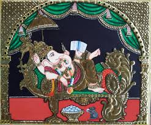
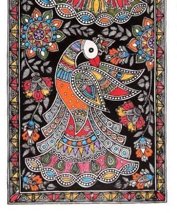
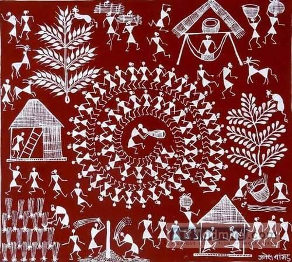
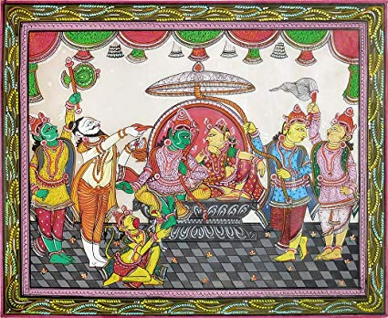
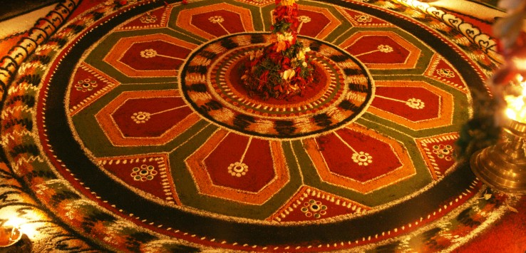

Visual Arts
Folk & Tribal Art
 India had always been known as the land that portrayed cultural and traditional vibrancy through its conventional arts and crafts. The 35 states and union territories sprawled across the country have their own distinct cultural and traditional identities, and are displayed through various forms of art prevalent there. Every region in India has its own style and pattern of art, which is known as folk art. Other than folk art, there is yet another form of traditional art practiced by several tribes or rural population, which is classified as tribal art. The folk and tribal arts of India are very ethnic and simple, and yet colorful and vibrant enough to speak volumes about the country's rich heritage.
Moreover, the regional dances of India, such as the Bhangra dance of Punjab, the Dandiya of Gujarat, the Bihu dance of Assam, etc, which project the cultural heritage of those regions, are prominent contenders in the field of Indian folk art. These folk dances are performed by people to express their exhilaration on every possible event or occasion, such as the arrival of seasons, the birth of a child, weddings, festivals, etc. The government of India, as well as other societies and associations, have therefore made all efforts to promote such art forms, which have become an intrinsic part of India's cultural identity.
India had always been known as the land that portrayed cultural and traditional vibrancy through its conventional arts and crafts. The 35 states and union territories sprawled across the country have their own distinct cultural and traditional identities, and are displayed through various forms of art prevalent there. Every region in India has its own style and pattern of art, which is known as folk art. Other than folk art, there is yet another form of traditional art practiced by several tribes or rural population, which is classified as tribal art. The folk and tribal arts of India are very ethnic and simple, and yet colorful and vibrant enough to speak volumes about the country's rich heritage.
Moreover, the regional dances of India, such as the Bhangra dance of Punjab, the Dandiya of Gujarat, the Bihu dance of Assam, etc, which project the cultural heritage of those regions, are prominent contenders in the field of Indian folk art. These folk dances are performed by people to express their exhilaration on every possible event or occasion, such as the arrival of seasons, the birth of a child, weddings, festivals, etc. The government of India, as well as other societies and associations, have therefore made all efforts to promote such art forms, which have become an intrinsic part of India's cultural identity.
Tanjore Art

Folk art is linked with the forgotten art of story telling. Paintings are used to depict the visual counterpoint in narration in every region of India. Art forms of Rajasthan, Gujarat and Bengal narrate the myths and legends of local heroes and deities and construct a kaleidoscopic image of our glorious past and rich cultural heritage. Each work is a complete narration in itself, giving us a glimpse of the past, which has been kept alive by talent and devotion of our artists.
Madhubani Painting

Madhubani painting, also referred to as Mithila Art (as it flourishes in the Mithila region of Bihar), is characterized by line drawings filled in by bright colours and contrasts or patterns. This style of painting has been traditionally done by the women of the region, though today men are also involved to meet the demand. These paintings are popular because of their tribal motifs and use of bright earthy colours. These paintings are done with mineral pigments prepared by the artists. The work is done on freshly plastered or a mud wall.
Madhubani art has five distinctive styles, namely, Bharni, Katchni, Tantrik, godna and kohbar. In the 1960s Bharni, Kachni and Tantrik style were mainly done by Brahman and Kayashth women, who are 'upper caste' women in India and Nepal. Their themes were mainly religious and they depicted Gods and Goddesses, flora and fauna in their paintings. People of lower castes include aspects of their daily life and symbols, story of Raja Shailesh [ guard of village] and much more, in their paintings. But nowadays Madhubani art has become a globalised art form so there is no difference in the work of artists of the region on the basis of caste system . They are working in all five styles. Madhubani art has received worldwide attention.
Warli Folk Painting

Maharashtra is known for its Warli folk paintings. Warli is the name of the largest tribe found on the northern outskirts of Mumbai, in Western India. Despite being in such close proximity of the largest metropolis in India, Warli tribesmen shun all influences of modern urbanization. Warli Art was first discovered in the early seventies. While there are no records of the exact origins of this art, its roots may be traced to as early as the 10th century A.D. Warli is the vivid expression of daily and social events of the Warli tribe of Maharashtra, used by them to embellish the walls of village houses. This was the only means of transmitting folklore to a populace not acquainted with the written word. This art form is simple in comparison to the vibrant paintings of Madhubani.
Pattachitra Painting

Pattachitra style of painting is one of the oldest and most popular art forms of Odisha. The name Pattachitra has evolved from the Sanskrit words patta, meaning canvas, and chitra, meaning picture. Pattachitra is thus a painting done on canvas, and is manifested by rich colourful application, creative motifs and designs, and portrayal of simple themes, mostly mythological in depiction.
Some of the popular themes represented through this art form are Thia Badhia - depiction of the temple of Jagannath; Krishna Lila - enactment of Jagannath as Lord Krishna displaying his powers as a child; Dasabatara Patti - the ten incarnations of Lord Vishnu; Panchamukhi - depiction of Lord Ganesh as a five-headed deity.
Kalamezhuthu

Names like Rangoli, Kolam etc are not new to us, and neither is the tradition of drawing them at the entrance of homes and temples. In fact it is part of the domestic routine in Hindu households, who consider it auspicious to draw certain patterns at the doorstep and courtyard to welcome a deity into the house. This art form is a harmonious blend of Aryan, Dravidian and Tribal traditions.
Kalam (Kalamezhuthu) is unique form of this art found in Kerala. It is essentially a ritualistic art practiced in temples and sacred groves of Kerala where the representation of deities like Kali and Lord Ayyappa, are made on the floor.